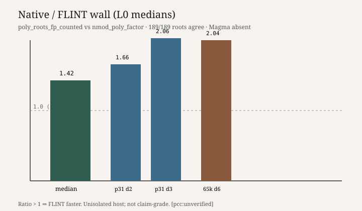

See REPORT.md in the same directory. Magma absent; 189/189 roots agree; median native/flint = 1.4165. [pcc:unverified]

# Rootfinder external qualification (L0) — 2026-11-27 America/Los_Angeles
Follow-up to merged PR #5283. This study measures the shared
`poly_roots_fp_counted` extractor against FLINT 3.0.1 `nmod_poly_factor` on
identical split univariates. `[pcc:unverified]`
## Verdict (diagnostic only)
- **Correctness:** 189/189 cells agree (native = FLINT = planted roots).
- **Wall (L0, unisolated):** median `native_ns / flint_ns` = **1.4165**
(native slower than FLINT on this host panel).
- **Magma:** absent (`magma_present=false`); named missing, not claimed as
beaten.
- **Iso Lab / claim-grade:** blocked — AWS STS `InvalidClientTokenId` on the
injected cloud credentials. No paid job launched. Protocol frozen in
`PROTOCOL.md`.
This is not a fastest-external claim under AGENTS §15 until Magma is measured
or permanently named unavailable on the admitted host, and until L2 isolation
admits the wall figures.
## Method
Persistent FLINT helper (`flint_helper/root_nmod`) times only
`nmod_poly_factor` via `CLOCK_MONOTONIC`. Native times
`poly_roots_fp_counted` via `Instant`. One warm cell precedes the panel.
Panel: primes `{17,31,101,1009,65537,2^31−1}`, degrees 2..6 (p31: ≤3),
seeds 1..7, monic split polys.
Raw: `raw/l0-panel.jsonl`, console: `raw/l0-run.txt`.
Helper SHA-256: `e098f2b0a4c10d4fcecdefd95340d2e9d1bf5d6052064aa3c481669a0e1cd7c9`.
## Panel medians (`native/flint`)
| p | deg2 | deg3 | deg4 | deg5 | deg6 |
| ---: | ---: | ---: | ---: | ---: | ---: |
| 17 | 1.22 | 1.49 | 1.07 | 1.14 | 1.13 |
| 31 | 1.62 | 1.52 | 1.20 | 1.42 | 1.19 |
| 101 | 1.02 | 1.39 | 1.34 | 1.55 | 1.36 |
| 1009 | 1.40 | 1.60 | 1.48 | 1.78 | 2.10 |
| 65537 | 1.37 | 1.32 | 1.31 | 1.75 | 2.04 |
| 2147483647 | 1.66 | 2.06 | — | — | — |
## Complete-pipeline / PKM
Cold F4/PKM end-to-end with corrected counters remains for the Iso Lab
admission in `PROTOCOL.md`. Local L0 here covers the shared root extractor
only (the component #5283 landed into F4 Auto).
## Sources checked
- PR #5283 body (adaptive roots in F4/PKM; performance left open).
- AGENTS §15 (FLINT / Magma / NTL for polynomial roots).
- `docs/ACTIVE.md` unchecked qualification item.
- KB unavailable in this runtime; repository paths used instead.